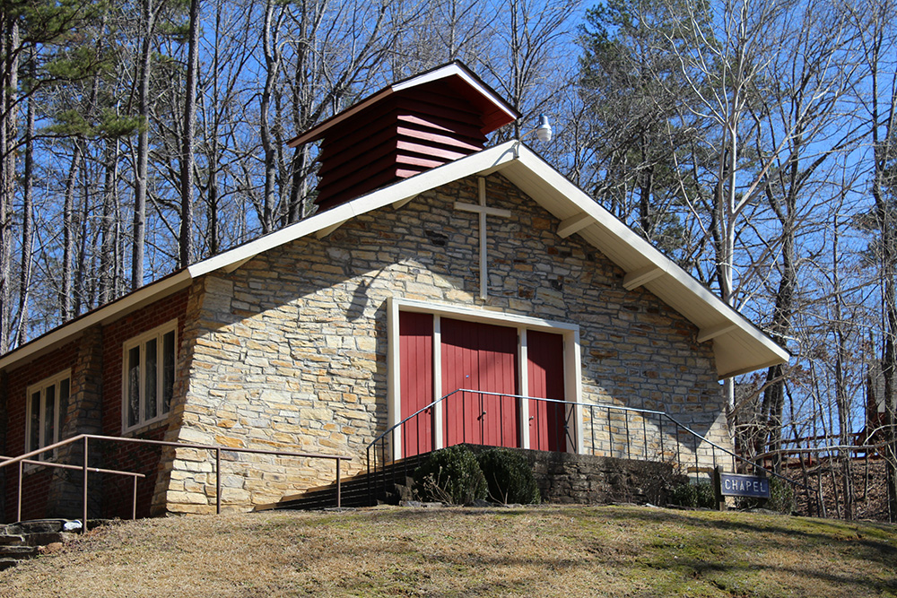

Overview
Who Am I?
I am Jason Allen and I am a Computer Engineering major
in the Cybersecurity and Information Internetworks thread with strong leadership and teamwork experience.
Experience working in close-contact and constant communication and collaboration with multi-disciplinary
teams for multiple projects including development of a front-end and back-end for a
database system for a delivery company and IoT connection and implementation of Azure Zero Trust
with Microcontrollers.
Looking to pursue a career in data analytics or database design for January 2024.

In this ongoing project, I am collecting, modeling, cleaning, and analyzing data for
an Episcopal Camp in Toccoa, GA. Using the data I am gathering over the summer, I will
be able to make an informed recommendation on the future of the camp.


Personal passion project during my senior year of Georgia
Tech. This project includes Web Scraping using libraries
such as Requests and BeautifulSoup.

Group project from my Junior year course that focused on database development that started my interest in Database Management and
Data Analytics
This is a multi-week individual project that I developed in my Junior year.
Usage of UDP-based Data Transfer Protocol to build a multi-client,
password protected chat client in C. Computer Networking basics such as
packets and protocols.

In this Junior year individual project, I performed indepth research into TCP Vegas
and it's congestion control algorithms for computer networking. In C, I created multiple methods
to handle incoming and outgoing packets by tracing timestamps of returning ACKs to measure
congestion in a pipe.